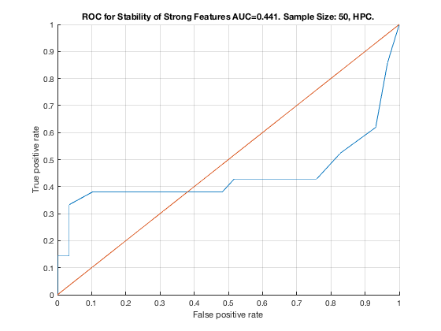

MltNet. Sample Size: 50. HPC.
unit_stability_type(50, 1, "MltNet")
Table 50. Stability by Type. Sample Size: 50, HPC.
___________________________________________________
SELECTED COUNTS: Strong:=21, Weak=25, Irrelevant=4
TOTAL COUNTS: Strong:=23, Weak=1300, Irrelevant=4
Feature_Number Stability Type Path_Length N_MBS Equivalence
______________ _________ ____________ ___________ _____ ___________
21 ' 0.306 ' ' STRONG ' 1 0 21
18 ' 0.160 ' ' STRONG ' 1 0 18
22 ' 0.098 ' ' STRONG ' 2 0 21
36 ' 0.082 ' ' weak ' 8 0 36
23 ' 0.068 ' ' STRONG ' 3 0 21
19 ' 0.062 ' ' STRONG ' 2 0 18
20 ' 0.056 ' ' STRONG ' 3 0 18
1 ' 0.034 ' ' STRONG ' 1 0 1
7 ' 0.032 ' ' STRONG ' 1 0 7
39 ' 0.032 ' ' weak ' 4 0 39
42 ' 0.032 ' 'irrelevant' Inf 0 42
38 ' 0.028 ' ' weak ' 5 0 38
47 ' 0.028 ' 'irrelevant' Inf 0 47
28 ' 0.026 ' ' weak ' 5 0 28
33 ' 0.026 ' ' weak ' 8 0 33
40 ' 0.026 ' ' weak ' 3 0 40
24 ' 0.022 ' ' weak ' 4 0 24
29 ' 0.020 ' ' weak ' 11 0 29
32 ' 0.020 ' ' weak ' 8 0 32
31 ' 0.018 ' ' weak ' 9 0 31
35 ' 0.018 ' ' weak ' 7 0 35
37 ' 0.018 ' ' weak ' 6 0 37
12 ' 0.016 ' ' STRONG ' 1 9 12
45 ' 0.016 ' ' weak ' 7 9 45
26 ' 0.014 ' ' weak ' 5 9 26
49 ' 0.014 ' ' weak ' 6 9 49
50 ' 0.012 ' ' weak ' 5 9 50
51 ' 0.012 ' ' weak ' 4 9 51
30 ' 0.010 ' ' weak ' 10 9 30
41 ' 0.010 ' ' weak ' 3 9 41
46 ' 0.010 ' ' weak ' 7 9 46
2 ' 0.008 ' ' STRONG ' 2 18 1
3 ' 0.008 ' ' STRONG ' 4 27 1
25 ' 0.008 ' ' weak ' 6 27 25
53 ' 0.008 ' ' weak ' 5 27 53
8 ' 0.006 ' ' STRONG ' 2 54 7
10 ' 0.006 ' ' STRONG ' 4 81 7
27 ' 0.006 ' ' weak ' 6 81 27
34 ' 0.006 ' ' weak ' 8 81 34
44 ' 0.006 ' 'irrelevant' Inf 81 44
5 ' 0.004 ' ' STRONG ' 3 108 1
9 ' 0.004 ' ' STRONG ' 3 144 7
13 ' 0.004 ' ' STRONG ' 2 288 12
15 ' 0.004 ' ' STRONG ' 3 432 12
16 ' 0.004 ' ' STRONG ' 2 576 12
43 ' 0.004 ' 'irrelevant' Inf 576 43
4 ' 0.002 ' ' STRONG ' 4 720 1
11 ' 0.002 ' ' STRONG ' 4 900 7
14 ' 0.002 ' ' STRONG ' 3 1125 12
48 ' 0.002 ' ' weak ' 6 1125 48
Figure 50. ROC for Stability of Strong Features AUC=0.441. Sample Size: 50, HPC.
_________________________________________________________________________________
